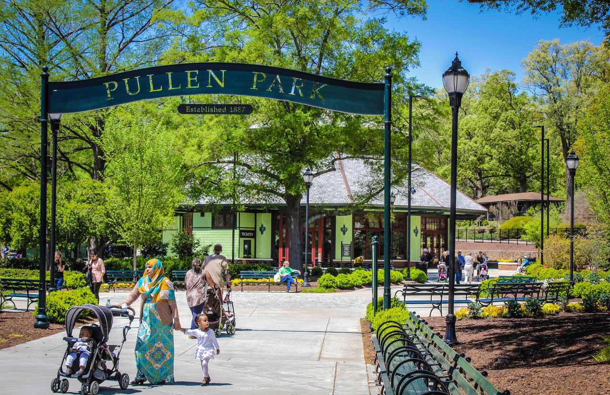

Nestled between downtown Raleigh and the North Carolina State University campus, Pullen Park is an iconic spot for locals and visitors alike. Established in 1887, it is the first public park in North Carolina and the 5th oldest operating amusement park in the United States.
Whether you want to take a leisurely stroll around Lake Howell, grab a bite to eat, or relive some childhood nostalgia on the historic amusement rides, it is a perfect place to spend a few hours on a weekend.

Want to plan your visit or buy tickets? Check out the official Pullen Park website!.